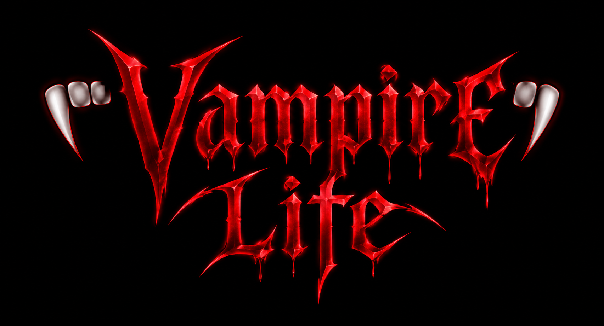
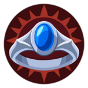
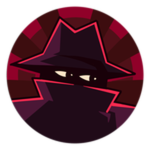
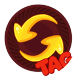

Vampire Life

MMORPG de sobrevivência no Roblox. Vire vampiro, lobisomem ou bruxa, suba de nível e domine o servidor. Tudo o que você precisa saber, num lugar só.
Comece aqui
Todo mundo nasce humano (ou com 1% de chance, vampiro natural). Escolha seu caminho:
Virar vampiro
- Um vampiro nível 150+ usa Infect em você.
- Morda um NPC ou jogador que não seja vampiro.
- Pronto: você é um Vampiro Normal.
Virar lobisomem
- Leve um arranhão de um lobisomem.
- Chance de infecção: 5% por arranhão.
Virar bruxa
- Ache o livro que aparece aleatoriamente no mapa (geralmente na floresta).
- Pegue-o para desbloquear os poderes.
📈 Como evoluir
- Derrote NPCs do seu nível (veja onde farmar).
- Faça missões: dão XP e dinheiro.
- Venda minérios no Ore Buyer.
- Use códigos de XP em dobro.
💡 Dicas para iniciantes
- Comece por inimigos fáceis e suba aos poucos.
- Leia o objetivo das missões e volte ao NPC quando pedir.
- Confira preços antes de comprar.
- Cuidado à noite e na Lua de Sangue.
🎟️ Resgatar códigos
- Abra as configurações (engrenagem).
- Vá na aba Codes.
- Digite o código exatamente como está e confirme.
🧛 Vampiros
A raça principal. Habilidades desbloqueiam por nível.
Habilidades
| Nível | Habilidade | O que faz | Recarga |
|---|---|---|---|
| Inicial | 🩸 Blood Sucking | Morde, causa dano leve e recupera sangue. Em outro vampiro, impede a regeneração dele. | — |
| Inicial | 👁️ Vampiric Vision | Revela órgãos e ajuda a localizar criaturas à distância. | — |
| 5 | 💥 Neck Break | Quebra o pescoço do alvo. | 18 s |
| 20 | 🌀 Hypnosis | Controla jogadores ou NPCs por 15 segundos. | — |
| 100 | 🦇 Ceiling Sleep | Dorme pendurado no teto para ganhar XP devagar. | — |
| 150 | 🧬 Infect | Infecta humanos para começar a transformação. | 8 s |
| 150 | ❤️ Heart Extraction | Arranca um coração; comê-lo dá uma vida extra contra golpe letal. | 90 s |
| 800 | 👑 Bloodline | Controla e transforma humanos; você ganha 50% do XP deles. Membros ficam livres no nível 300. Comandos | — |
| 3000 | 🌋 Ground Stomp | Onda de choque no chão. Segure o botão de soco. Antes era exclusivo dos Originais. | — |
📈 Ranks por nível
- Rookie: 0–50
- Bloodthirsty: 51–200
- Experienced: 201–400
- Ancient: 401+
🏆 Títulos especiais
- ⚡ Speedster: vença 50+ Clashes (prioridade máxima)
- 🛡️ Guard Assassin: mate 400+ guardas
- 🔮 Witch Hunter: mate 100+ bruxas
Só um título aparece, e ele substitui o rank.
🌳 Skill Tree
- 🏃 Velocidade de corrida
- ❤️ Regeneração
- 💤 XP do Ceiling Sleep
- ⚡ Reflexos vampíricos
Variantes de vampiro
| Variante | Como conseguir | Efeito |
|---|---|---|
| Natural | 1% de chance ao nascer | Sem diferença relevante do Normal. |
| Normal | Transformado por outro vampiro | Padrão. |
| Cannibal | 5% ao beber sangue de outro vampiro | +20% velocidade, força e vida. 20% de chance de perder ao beber sangue humano ou de bruxa. |
| Cannibal Raised | 1% ao ser transformado por um Cannibal | +20% velocidade, força e vida. Permanente. |
| Original | Game Pass | Mais força e resistência. Vulnerável só à White Oak Ash Dagger. |
| Vegan em breve | Alimentar-se só de ratos | Apenas uma tag. Bônus não confirmados. |
🐺 Lobisomens
Fortes e brutais. Ainda há poucos detalhes confirmados.
🐾 Transformação
Um lobisomem arranha o jogador. Chance de infecção: 5%.
🍖 Fome
Lobisomens têm barra de fome. Alimente-se comendo corpos caídos no chão.
🌕 Transformação avançada
Chegue ao nível 750 e coma a carne de outro lobisomem ao menos uma vez para desbloquear permanentemente.
📢 Mudanças anunciadas em breve
- O lobisomem mais forte vira Alfa (+20% de bônus).
- 20+ skins novas.
- Ataques venenosos contra vampiros.
- Não podem morder Vampiros Originais.
- Uivo que chama outros lobisomens.
- Recargas menores e animações mais suaves.
🔮 Bruxas
Magia, rituais e crafting. Bruxas não têm Skill Tree: tudo vem do nível.
Feitiços
| Nível | Feitiço | O que faz | Recarga |
|---|---|---|---|
| Inicial | ✨ Fists | Mãos brilham roxo e lançam orbes mágicos de médio alcance. | — |
| Inicial | 🖤 Soul Drain | Drena a alma, levita o alvo, causa bastante dano e cura você. | 38 s |
| 15 | 🪨 Petrification | Petrifica jogadores e NPCs temporariamente. | 25 s |
| 25 | 💪 Strength | +20% de força em um aliado ou NPC (não acumula). Frase: “Strength!” | 38 s |
| 25 | 👻 Invisibility | Fica invisível e mais rápida. Ainda pode ser atingida. | — |
| 50 | 💥 Neck Break | Levanta o alvo e quebra o pescoço. | 15 s |
| 100 | ❤️ Heart Extraction | Arranca um coração que dá vida extra ao ser comido. | 90 s |
| 140 | 😖 Inflict Pain | Dor intensa no alvo. Sem mana, a bruxa passa a tomar dano. | 35 s |
| 300 | 🌀 Telekinesis | Levanta, move, prende e arremessa um jogador à distância. | — |
🏷️ Ranks por nível
- Novice: 0–24
- Adept: 25–49
- Gifted: 50–74
- Powerful: 75–99
- Elder: 100–399
- Ancient: 400–799
- Sacred: 800+
👑 Supreme Witch
A bruxa de maior nível do servidor ganha, sem custo extra de mana:
- +10% dano mágico
- +10% poder e duração do Strength
- +10% duração da Petrification
🛒 Loja da bruxa
- 🧹 Vassoura: 15.000 (mais rápida, tem durabilidade)
- 🎒 Bolsa: 1.300 (não perde itens ao morrer/sair)
- 🕯️ Vela: 300 (máx. 5 por jogador)
Rituais
🕯️ Meditação
- 5 velas em pentagrama, a 2–3 passos do centro.
- Aparece o botão Meditate.
- +1 nível a cada 15 min, invulnerável.
- Acaba se você se afastar ou mexerem nas velas.
- Clique duas vezes na vela para removê-la.
🔎 Rastreamento
- 3 velas em triângulo + um coração no centro.
- Digite no chat:
Quaerere NomeDoJogador - Rastreia alguém que está no servidor.
🖤 Imortalidade nível 2000+
- Digite no chat:
Sanguis tuus vita mea - Clique num Vampiro Original em até 10 s.
- Dura enquanto esse Original estiver vivo e no servidor.
- Espera de 20 min para refazer.
🛡️ Praesidium
Proteção contra vampiros, feita na Spell Table com sangue de vampiro + verbena. Vampiro e bruxa precisam ser nível 100+.
- 🍷 Cálice: 800 moedas → 20 min
- 🛡️ Prato: 3.000 moedas → 40 min
Quem atacar pode hibernar ao morder ou morrer ao tentar Neck Break.
Crafting
| Item | Bruxa | Ingredientes | Onde | Efeito |
|---|---|---|---|---|
| 💍 Sun Ring | 100+ | 1 coração + 1 anel de metal | Magic Altar | Só resistência ao sol (não dá os bônus do Game Pass). |
| 🗡️ White Oak Ash Dagger | 800+ | 1 adaga + 1 White Oak Stake | Spell Table | Só afeta Originais. Vença o Clash para cravar; imobiliza até ser removida. |
| 🧪 Inhuman | 1000+ | Coração + sangue de vampiro + adaga comum | — | Original fica imune à adaga por 5 h e pode devolvê-la ao atacante. |
📍 Magic Altar: floresta perto da borda do mapa. Siga a estrada para a vila da igreja, pegue a esquerda na bifurcação e siga até o altar.
🐀 Domesticar ratos em breve
Bruxas poderão domar ratos e usá-los como ladrões para farmar XP. Hoje os ratos já roubam itens largados no chão e levam para a toca, então cuidado ao dropar itens. Como domar e quanto XP rende ainda não foi confirmado.
🐺🩸 Híbrido OG
A forma mais rara do jogo. Anunciada pelo dev em 23/10/2026.
✅ Requisitos
- Game Pass Original Vampire
- Nível 5000 como vampiro e 5000 como lobisomem
🔁 Como acontece
- 🧛 Sendo vampiro: leve arranhão/mordida de lobisomem.
- 🐺 Sendo lobisomem: receba sangue de vampiro.
- 🎲 Chance: ~0,9% (90 em 10.000).
🔒 Quem infecta
Precisa ter nível 1000+. Um Híbrido OG pode infectar usando as duas formas: dando sangue (vampiro) ou arranhando (lobisomem).
Status, habilidades e recargas do Híbrido ainda não foram confirmados.
🗡️ Humanos
A raça mais comum e o ponto de partida de todas as transformações.
⚔️ Armas
Humanos podem usar estacas e armas contra vampiros. Compre na Weapons Shop.
⚠️ Alvo fácil
Podem ser alvo de Hypnosis, Infect e feitiços de bruxa. Guardas atacam humanos que agridem NPCs.
🏹 Vampire Hunter em breve
Classe de caçador em desenvolvimento. Também foi anunciado um sistema de comida com atributos para humanos e bruxas.
👹 NPCs
Onde farmar de acordo com seu nível, e quem dá missões.
Onde farmar
🧍 Humanos 0–70
Sem habilidades: só socam ou fogem. Fogem de vampiros, Originais e Híbridos.
🛡️ Guardas 70–250
Mais fortes. Atacam quem agride NPCs humanos. Fogem de lobisomens, Originais e Híbridos.
🏹 Caçadores 250–2900
- Área 1: nível ~250–700
- Área 2: nível ~1000–2900
Variantes: 👊 soco, 🔫 pistola (quase iguais visualmente), ⚔️ espada com capa branca (habilidade especial).
🐺 Lobisomens 6500–7950
De dia parecem aldeões fracos. À noite viram lobisomens poderosos. Na Lua de Sangue (evento aleatório) ficam mais agressivos e causam muito mais dano.
NPCs de missão
| NPC | Missão | Recompensa |
|---|---|---|
| 🗺️ Random Quest / Sage Order | Varia (ex.: eliminar 60 NPCs humanos e voltar) | XP + dinheiro (varia) |
| 🏹 Quest Giver | HUNT: eliminar 9 caçadores (perto de uma árvore, área externa) | Não confirmada |
| 🐺 Werewolf Hunter | WEREWOLF HUNT: eliminar 6 lobisomens | 4.500 XP + $450 |
| ⛏️ Ore Buyer | Vende minérios (barraca na vila, “Sell Ores”) | Dinheiro |
⚔️ Weapons Shop
| Item | Preço / Receita |
|---|---|
| 🪵 Wood Stake | $300 |
| 🥈 Silver Stake | 1 Wood Stake + 8 Silver Bars |
| 🌳 White Oak Stake | $15.000 |
| 🗡️ Dagger | 20 Silver + $400 |
| ⛏️ Pickaxe | $500 |
🎟️ Game Passes
Preços da loja do Roblox em 25/10/2026 (podem estar em promoção no jogo).
Original Vampire
Mais força e resistência, imune a ataques em geral. Só uma estaca especial (cara) pode matar. Libera o caminho para o Híbrido OG.

Sun Ring
Anel com imunidade ao sol, mais força, mais velocidade e 2× XP ilimitado.
Save Progress
Salva seu nível em cada raça. Trocou de vampiro para bruxa (ou qualquer outra)? Ao voltar, seu nível anterior continua lá, sem perder nada.

Hide Level & Gear
Para roleplay: esconde seu nível e equipamento. Use /hide e /unhide.

⌨️ Comandos
Clique em qualquer comando para copiar.
👑 Bloodline nível 800
/bloodline NOME | criar |
/editbloodline NOME | editar |
/delbloodline | apagar |
/blinvite JOGADOR | convidar |
/blaccept | aceitar convite |
/bldecline | recusar convite |
/blkick JOGADOR | expulsar |
/blleave | sair |
/blmembers | ver membros |
🏷️ Custom Tag
/tag Seu Texto | cor padrão |
/tag R, G, B Seu Texto | cor RGB |
/editag Novo Texto | editar |
/Retag | remover |
Monte sua tag:
🎭 Outros
/hide | esconder nível (pass) |
/unhide | mostrar nível |
Quaerere NOME | rastrear (bruxa) |
Sanguis tuus vita mea | imortalidade (bruxa) |
🎟️ Códigos
Divulgados no Discord entre 3 e 19/10/2026. Diferencia maiúsculas. Podem expirar ou ter limite de uso.